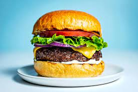

Traditional Hamburgers!

Description
Have you ever wanted to munch on the juiciest hamburger
ever? Well then do I have a treat for you! Today we will be
sampling a never-before seen hamburger recipe that you can
and SHOULD use every night and at every
cookout you go to!
Despite popular rumors declaring that hamburgers are unethical
and should not be eaten by startup food chain "Chik-fil-a"
there is nothing wrong with a yummy hamburger. If you've
read this far I am quite confident to say that you
are either a spy for the Lord's Chicken or you
just like me and want the best hamburger the world
can offer you! Lets talk about those ingredients first!
ingredients
- Buns
- Pickles
- Lettuce
- Tomato
- Onion
- Ketchup
- Mustard
- Mayo
- Cheese
- The finest Hamburger meat Wally
World can provide
- The secret Krabby Patty Formula
and a hatred of Mr. Krabs
Steps
- Take your buns out and fry them on the grill
until they are crispy on low heat. This is so your grill
has time to ramp up in heat properly (professional griller
here)
- Next take your cheese and lay it on your burger
and set the burger on the grill. While they are cooking
move on to the next step.
- Take all three condiments and the Pickles
and onions. combine the condiments as you see fit
and then add the pickles and onions to the mix and mash
until it is a nice and smooth liquid.
- Go back to your burger and take it off the grill
and gather all remaining ingredients.
- Start with a bun on the bottom and add the special
mixture of condiments + pickles and onions.
After that place your burger with cheese on top
and lay the lettuce and tomato on top. Once
you put your finals toppings on place the top bun on
and you are finished!
- If you enjoyed this recipe please leave your
feedback by emailing us @ theREALlordschicken@websitefaker.net